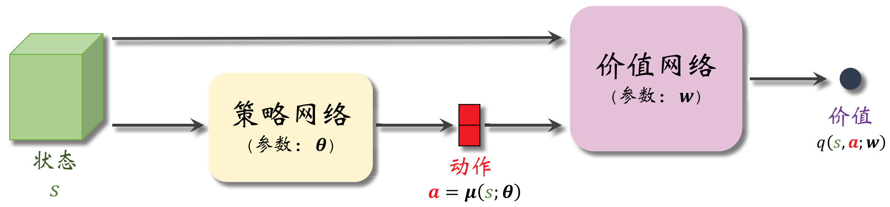
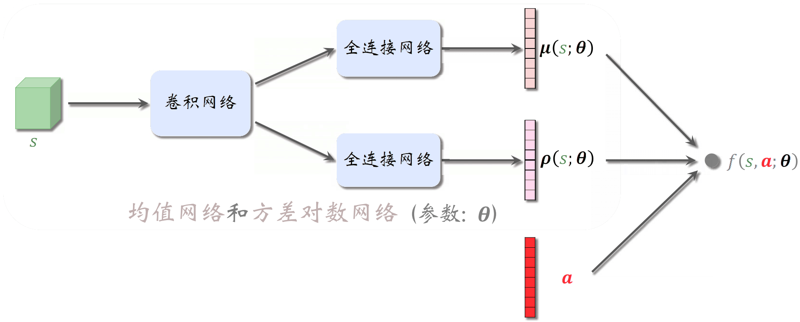

连续控制
Deterministic Policy Gradient（DPG）
在动作空间连续时无法通过策略网络 πθ(a∣s) 来参数化策略，此时可以通过确定性策略 μθ(s) 来进行建模，并在确定性策略空间 D 中搜索最优策略。类似地，在确定性策略下的优化目标函数为：
J(θ)=Es0∼b0(⋅)Es1∼p(⋅∣s0, μθ(s0))⋯EsT∼p(⋅∣sT−1, μθ(sT−1))[t=0∑TγtR(st, μθ(st))]
目标函数对策略参数 θ 求梯度可得：
∇θJ(θ)=∇θs0∑s1∑⋯sT∑[b0(s0)t=0∏T−1p(st+1∣st, μθ(st))t=0∑TγtR(st, μθ(st))]=s0∑s1∑⋯sT∑[b0(s0)∇θ(t=0∏T−1p(st+1∣st, μθ(st)))t=0∑TγtR(st, μθ(st))]+s0∑s1∑⋯sT∑[b0(s0)t=0∏T−1p(st+1∣st, μθ(st))∇θ(t=0∑TγtR(st, μθ(st)))]=s0∑s1∑⋯sT∑[b0(s0)t=0∏T−1p(st+1∣st, μθ(st))∇θ(t=0∑T−1lnp(st+1∣st, μθ(st)))t=0∑TγtR(st, μθ(st))]+s0∑s1∑⋯sT∑[b0(s0)t=0∏T−1p(st+1∣st, μθ(st))∇θ(t=0∑TγtR(st, μθ(st)))]=Es0Es1⋯EsT[(t=0∑T−1∇θlnp(st+1∣st, μθ(st)))⋅(t=0∑TγtR(st, μθ(st)))+t=0∑Tγt∇θR(st, μθ(st))]
确定性策略梯度的第一部分可以通过类似的方法化简为：
=Es0Es1⋯EsT[t=0∑T−1∇θlnp(st+1∣st, μθ(st))⋅γt+1τ=t+1∑Tγτ−t−1R(sτ, μθ(sτ))]t=0∑T−1γt+1Es0Es1⋯Est+1[∇θlnp(st+1∣st, μθ(st))⋅vμθ(t+1)(st+1)Est+2⋯EsTτ=t+1∑Tγτ−t−1R(sτ, μθ(sτ))]
其中，确定性策略下的状态价值函数与动作价值函数为：
vμ(t)(st)=qμ(t)(st, μ(st))=Est+1Est+2⋯EsT[τ=t∑Tγτ−tR(sτ, μ(sτ))]
进一步整理确定性策略梯度形式为：
∇θJ(θ)=t=0∑T−1γt+1Es0Es1⋯Est+1[∇θlnp(st+1∣st, μθ(st))vμθ(t+1)(st+1)]+t=0∑TγtEs0Es1⋯Est[∇θR(st, μθ(st))]=t=0∑T−1γtEs0Es1⋯Est[∇θR(st, μθ(st))+γEst+1[∇θlnp(st+1∣st, μθ(st))vμθ(t+1)(st+1)]]+Υθ(T)=t=0∑T−1γtEs0Es1⋯Est[∇θR(st, μθ(st))+γst+1∑∇θp(st+1∣st, μθ(st))vμθ(t+1)(st+1)]+Υθ(T)=t=0∑T−1γtEs0Es1⋯Est∇θ[R(st, μθ(st))+γst+1∑p(st+1∣st, μθ(st))vsg[μθ](t+1)(st+1)]+Υθ(T)=t=0∑TγtEs0Es1⋯Est∇θqsg[μθ](t)(st, μθ(st))=t=0∑TγtEs0Es1⋯Est[∇θμθ(st)∇aqμθ(t)(st, a)∣∣∣∣∣a=μθ(st)]
其中 sg[⋅] 为停止梯度算子，残余项 Υθ(T) 为：
Υθ(T)=γTEs0Es1⋯EsT∇θR(st, μθ(st))=γTEs0Es1⋯EsT∇θqsg[μθ](T)(st, μθ(st))

DPG 方法包含 actor 网络 μθ(s) 和用于估计 qμθ(s, a) 的 critic 网络 qw(s, a)，在实现时为了平衡探索性，采样轨迹的行为策略在 μθ(s) 的基础上引入了随机噪声 ξ，在这种异策略的形式下确定性策略梯度需要近似为：
∇θJ(θ)≈t=0∑TγtEs0∼b0(⋅)Ea0∼π(⋅∣s0)Es1∼p(⋅∣s0, a0)Ea1∼π(⋅∣s1)⋯Est∼p(⋅∣st−1, at−1)[∇θμθ(st)∇aqw(st, a)∣∣∣∣∣a=μθ(st)]
在异策略的训练模式下，为了更有效地利用样本，可以引入经验回放机制，同时将确定性策略梯度近似为：
∇θJ(θ)≈n1i=1∑n∇θqw(si, μθ(si))=n1i=1∑n∇θμθ(si)∇aqw(si, a)∣∣∣∣∣a=μθ(si)
而 critic 网络采用时序差分误差的平方作为损失函数：
ℓ(w)=2n1i=1∑n[ri+γqw(si′, μθ(si′))−qw(si, ai)]2
Twin Delayed Deep Deterministic Policy Gradient（TD3）
与 DQN 类似，DPG 同样存在非均匀高估问题。具体来说，策略网络的参数经过不断更新会趋于最优策略：
μ⋆(s)∈aargmaxqw(s, a)
同时 critic 网络通过自举的方式进行更新，在上述最大化的动作选择策略下会逐渐累计正向误差造成高估。为了缓解高估问题，TD3 算法采用了以下几种技巧来获得比 DPG 更好的效果：
Clipped Double Q
利用 Double Q 方法的思想，使用一个目标策略网络进行策略选择，同时使用目标价值网络进行 TD 目标计算。计算得到的 TD 误差被用于价值网络的更新。不同的是这种方法引入了两个价值网络：
| 网络类型 |
原网络 |
目标网络 |
| actor |
μθ(s) |
μθ−(s) |
| critic |
qw1(s, a) |
qw1−(s, a) |
| critic |
qw2(s, a) |
qw2−(s, a) |
通过取两个目标价值网络的 TD 目标较小值作为两个价值网络更新的 TD 目标：
g=r+γmin(qw1−(s, μθ−(s)), qw2−(s, μθ−(s)))
动作噪声
通过目标策略网络选择的动作还可以进一步加入噪声，例如截断正态分布（保证噪声在范围 [−c, c] 内）：
a^=μθ−(s)+ξ⟸ξi∼CN(0, σ2, −c, c)

降低更新频率
策略网络、目标策略网络以及两个目标价值网络的更新频率应当慢于两个价值网络的更新频率，例如每间隔 k 轮进行一次策略提升以及一次目标价值网络同步，提升算法的稳定性。

随机高斯策略
随机高斯策略将每个动作维度建模为独立的正态分布，将均值和方差分别建模为均值网络和方差对数网络：
πθ(a∣s)=i=1∏d2πσi(s)1exp(−2σi2(s)[ai−μi(s)]2)=i=1∏d2πexp[ρθ; i(s)]1exp(−2exp[ρθ; i(s)][ai−μθ; i(s)]2)
其中方差对数网络可以避免标准差为正的约束，在均值网络和方差对数网络的基础上定义辅助网络：
fθ(s, a)=lnπθ(a∣s)=−21i=1∑d(ρθ; i(s)+exp[ρθ; i(s)][ai−μθ; i(s)]2)+constant

在随机高斯策略下的策略梯度可以写作：
∇θJ(θ)=t=0∑TγtEs0Ea0⋯EstEat[∇θlnπθ(at∣st)qπθ(t)(st, at)]=t=0∑TγtEs0Ea0⋯EstEat[∇θfθ(st, at)qπθ(t)(st, at)]
其中动作价值函数可以通过 REINFORCE、Actor-Critic 及其带基线的变种算法进行估计。